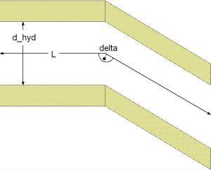

Calculation of pressure loss in edged bends with sharp corners at overall flow regime for incompressible and single-phase fluid flow through circular cross sectional area considering surface roughness.

dp = zeta_TOT * (rho/2) * velocity^2
with
| rho | as density of fluid [kg/m3], |
| velocity | as mean velocity [m/s], |
| zeta_TOT | as pressure loss coefficient [-]. |
zeta_TOT = A * C1 * zeta_LOC * CF_Fri* CF_Re [Idelchik 2006, p. 366, diag. 6-7] and [Miller 1984, p. 149, sec. 9.4]
with
| A | as coefficient considering effect for angle of turning [-], |
| C1 | as coefficient considering relative elongation of cross sectional area (here: circular cross sectional area) [-], |
| CF_Fri | as correction factor considering surface roughness [-], |
| CF_Re | as correction factor considering Reynolds number [-], |
| delta | as angle of turning [deg]. |
CF_Fri = lambda_FRI_rough / lambda_FRI_smooth
and the Darcy friction factors lambda_FRI are calculated with an approximated Colebrook-White law according to [Miller, p. 191, eq. 8.4]:
lambda_FRI = 0.25*(lg(K/(3.7*d_hyd) + 5.74/Re^0.9))^-2
with
| d_hyd | as hydraulic diameter [m], |
| K | as absolute roughness (average height of surface asperities) [m], |
| lambda_FRI | as Darcy friction factor[-], |
| Re | as Reynolds number [m], |
| zeta_TOT | as pressure loss coefficient [-]. |
Note that the Darcy friction factor for a smooth surface lambda_FRI_smooth is calculated with the previous equation and an absolute roughness of K = 0 . Additionally no influence of surface roughness is considered for angles of turning equal or smaller than 45° according to [Miller 1984, p. 214, eq. 9.4.2].
The correction for surface roughness through CF_Fri is used only in the turbulent regime, where the fluid flow is influenced by surface asperities not covered by a laminar boundary layer. Here the correction according to friction starts at Re ≥ Re_lam_leave according to [Idelchik 2006, p. 336, sec. 15]. Here the end of the laminar regime is restricted to a Reynolds number smaller than 2e3 w.r.t. [VDI, p. Lac 6, fig. 16].
Nevertheless the transition point from the laminar to the transition regime is shifted to smaller Reynolds numbers for an increasing absolute roughness. This effect is considered according to [Samoilenko in Idelchik 2006, p. 81, sec. 2-1-21] as:
Re_lam_leave = 754*exp(if k ≤ 0.007 then 0.0065/0.007 else 0.0065/k)
with
| k = K /d_hyd | as relative roughness [-], |
| Re_lam_leave | as Reynolds number for leaving laminar regime [-]. |
Note that the beginning of the laminar regime cannot be beneath Re ≤ 1e2 according to [VDI 2002, p. Lac 6, fig. 16]
In addition the influence or decreasing Reynolds numbers Re on the pressure loss coefficient zeta_TOT in the laminar regime is considered through a second correction factor CF_Re according to [Miller 1984, p. 149, sec. 9.4] and [Idelchik 2006, p. 340, sec. 28] by:
CF_Re = B/Re^exp for Re ≤ Re_lam_leave
with
| B = f(Geometry) | as coefficient considering effect of Reynolds number in laminar regime [-], |
| exp | as exponent for Reynolds number in laminar regime [-], |
| Re | as Reynolds number [-], |
| Re_lam_leave | as Reynolds number for leaving laminar regime [-]. |
Note that the coefficient B considers the influence of the angle of turning delta on the pressure loss coefficient zeta_TOT in the laminar regime according to [Idelchik 2006, p. 340, sec. 28].
Note that the correction of the pressure loss coefficient zeta_TOT is influenced by the correction factor CF_Re only for decreasing Reynolds numbers Re out of the turbulent fluid flow regime at Re ≤ Re_lam_leave into transition and laminar fluid flow regime.
The pressure loss coefficient zeta_TOT of a edged bend in dependence of the Reynolds number Re for different angles of turning delta is shown in the figures below.
Pressure loss calculation of edged bends is complex and there are large differences in literature data. Nevertheless these calculations cover the usual range of pressure loss coefficients for an edged bend.
The validation of the pressure loss coefficient for an edged bends shows four possible flow regimes:
Incompressible case [Pressure loss = f(m_flow)]:
The pressure loss in dependence of the mass flow rate of water is shown for different angles of turning:

Compressible case [Mass flow rate = f(dp)]:
The mass flow rate in dependence of the pressure loss of water is shown for different angles of turning: